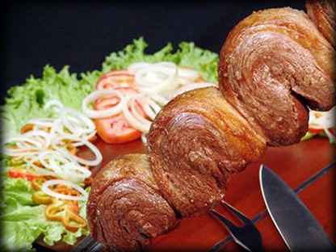

Originário do Rio Grande do Sul, o churrasco surgiu, no século XVII, nas imensidões dos pampas, quando essa parte do Brasil, disputada por castelhanos e paulistas, era ocupada por milhares de cabeças de gado selvagem, oriundas de Buenos Aires e de outras áreas da Argentina.
A princípio, o churrasco - como o conhecemos - era raríssimo, pois, naquela época, não havia a preocupação com o comércio da carne bovina, mas sim com a obtenção de couro e de sebo. Para isso, realizavam-se as vacarias - as matanças de gado. Os vaqueiros, depois de correrem, cercarem e matarem os bois, cortavam o pedaço mais fácil de partir e o assavam inteiro num buraco aberto no chão, temperando-o com a própria cinza do braseiro.
No final do século XVII, o churrasco tornou-se uma prática mais difundida, criando-se, assim, novas técnicas para o seu preparo. Surgiram os cortes especiais da carne, como a costela e a paleta. A generalização do hábito de comer churrasco acabou gerando diferentes estilos de consumo.